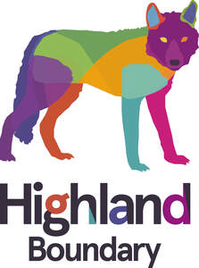
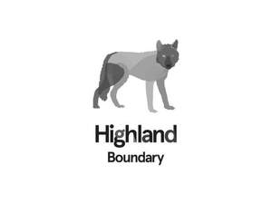

Trade Mark Journal No.2025/042 17 October 2025
UK00004261063 8 September 2025 (32,33,35)
Mark 1

Mark 2

- Class 32
- Syrup for making beverages; Fruit extracts (Non-alcoholic -); Non-alcoholic bitters; Non-alcoholic cordials; Non-alcoholic cocktails; Non-alcoholic cocktail mixes; Non-alcoholic fruit cocktails; Syrups for beverages; Non-alcoholic cocktail bases; Syrups for making fruit-flavored drinks; Alcohol free wine; Alcohol free beverages; Alcohol free aperitifs; Non-alcoholic beverages; Vegetable juices [beverages]; Fruit juice; Mixed fruit juices; Beverages consisting of a blend of fruit and vegetable juices; Organic fruit juice; Concentrated fruit juices; Fruit juice beverages; Fruit juice concentrates; Fruit juice bases; Fruit beverages; Non-alcoholic beverages containing fruit juices; Concentrates for making fruit juices; Non-alcoholic beverages containing vegetable juices; Fruit nectars; Non-alcoholic fruit juice beverages; Vegetable drinks; Non-alcoholic vegetable juice drinks; Fruit squashes; Fruit flavored drinks; Juices; Fruit flavoured drinks; Fruit nectars, non-alcoholic; Non-alcoholic fruit extracts; Non-alcoholic dried fruit beverages.
- Class 33
- Spirits; Distilled spirits; Digestifs [liqueurs and spirits]; Digesters [liqueurs and spirits]; Distilled beverages; Flavored tonic liquors; Low alcoholic drinks; Alcoholic cocktails; Alcoholic beverages except beers; Bitters; Herb liqueurs; Alcoholic bitters; Alcoholic aperitif bitters; Cocktails; Alcoholic cocktail mixes; Alcoholic cordials; Aperitifs with a distilled alcoholic liquor base; Pre-mixed alcoholic beverages; Pre-mixed alcoholic beverages, other than beer-based; Alcoholic beverages, except beer; Extracts of spiritous liquors; Beverages (Distilled -); Grainbased distilled alcoholic beverages; Alcoholic extracts; Alcoholic essences; Liqueurs; Fermented spirit; Spirits [beverages]; Aperitifs; Alcoholic fruit cocktail drinks; Aperitif wines; Beverages containing wine [spritzers]; but insofar as whisky and whisky based liqueurs are concerned, only Scotch whisky or Scotch whisky-based liqueurs produced in Highland region complying with the specifications of the GI Scotch Whisky.
- Class 35
- Wholesale services in relation to alcoholic beverages (except beer); Retail services in relation to alcoholic beverages (except beer); Retail services in relation to preparations for making alcoholic beverages; Retail services in relation to non-alcoholic beverages; Retail services relating to alcoholic beverages; Business administration services for processing sales made on the internet; Retail services in relation to preparations for making beverages; Mail order retail services related to non-alcoholic beverages; Retail services via global computer networks related to non-alcoholic beverages; Wholesale services in relation to non-alcoholic beverages; Wholesale services in relation to preparations for making alcoholic beverages; Mail order retail services related to alcoholic beverages (except beer); Retail services via global computer networks related to alcoholic beverages (except beer); Retail services via catalogues related to non-alcoholic drinks; Business management of wholesale and retail outlets; Business management of retail outlets; Product sampling.
Highland Boundary Limited
Representative: Alan A G Rae